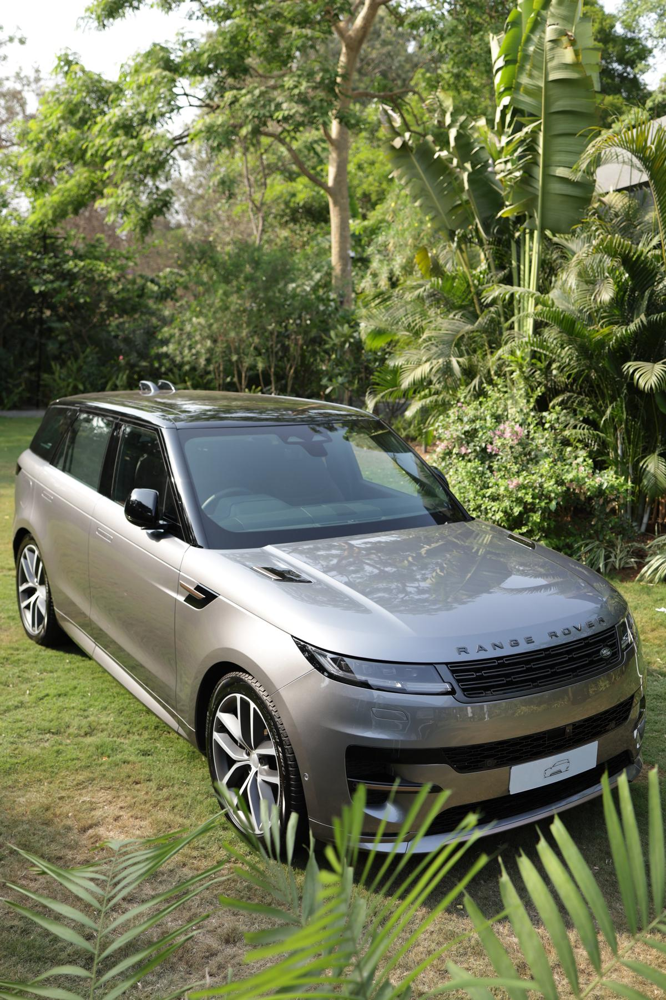

Concepts 21–30
ten directions — search-first, concierge, ledger and deal-driven UX structures 21Open →
21Open →Trust Blue
Clean blue SaaS marketplace — search-first welcome, sticky buy box, step-by-step sell wizard and tiered grade cards.
Manrope · Inter
22Open →Teal Assure
Pill-first teal UI — city selector hero, radio-tab car sheet with finance timeline, document checklist sell and live chat contact.
Plus Jakarta Sans 23Open →
23Open →Navy Concierge
Dark concierge desk — curated car cards with progress bars, scroll-snap listing strip, slider quote panel and plan comparison table.
Marcellus · Inter 24Open →
24Open →Daylight Amber
Hand-drawn bento on cream — offset shadows and 2px ink borders, grid/list view toggle, spec-table car sheet and price calculator.
Outfit · Inter 25Open →
25Open →Showroom Grid
Inventory utility — hairline-bordered tables everywhere, quiz hero, zero decoration, dense data-first browsing and flat pricing.
Space Grotesk · Inter 26Open →
26Open →Deep Sea Glass
Dark glass panels with mono numerals — bento welcome, snap-scroll strip, report-first car sheet and chat-based contact.
Sora · Plex Mono 27Open →
27Open →Civic Portal
Dense accessible portal — strong typographic hierarchy, 44px targets, row listings with sticky filter rail and plan cards.
Libre Franklin · Inter 28Open →
28Open →Emerald Trust
Bank-like institutional green — serif headings, ledger rules, dual-panel welcome, radio-tab car sheet and dark estimate panel.
Lora · Inter 29Open →
29Open →Steel Indigo
Modern SaaS flat indigo — quiz welcome, grid/list toggle browsing, tabbed car sheet with finance table and slider price calc.
Archivo · Inter 30Open →
30Open →Deal Navy
CarDekho deal energy — dark navy bands, rotated orange price stickers, bold badges, row browsing and tier cards.
Rubik · Inter